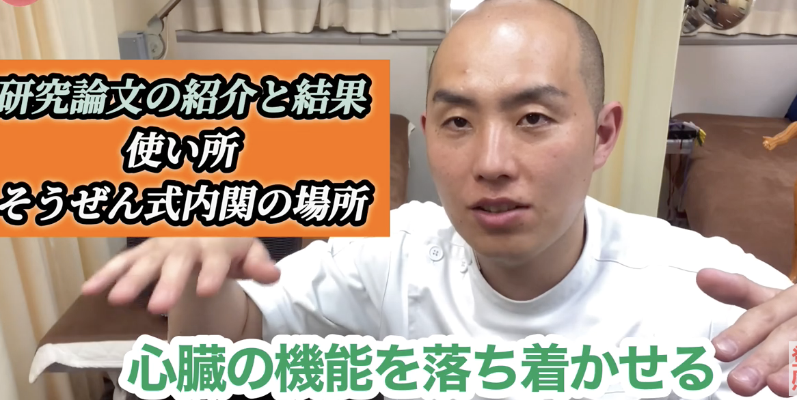
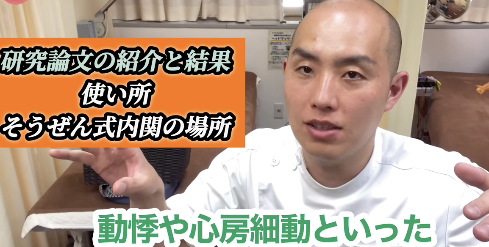
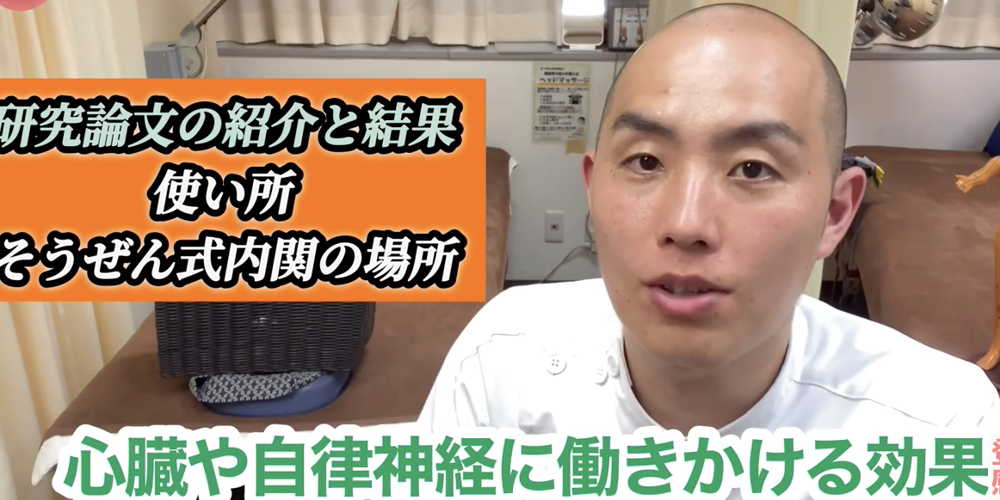
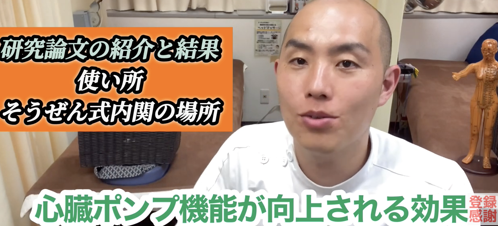
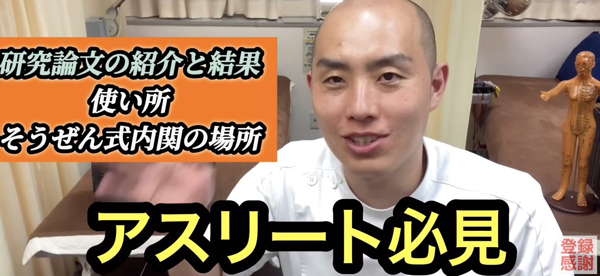

心房粗動の鍼灸
心房内に異常な電気回路ができ拍動が速くなる不整脈です。循環器内科の標準治療を最優先に、安定期には内関等で自律神経を整えます。
まず知っておきたい要点と改善の流れ
心臓の心房内に異常な電気の旋回回路が形成されることで、通常より心拍が速くなる不整脈です。右心房の三尖弁周囲を回る通常型と、心臓手術後などに起こる非通常型があります。加齢、高血圧、弁膜症・心筋症、甲状腺機能亢進症、睡眠時無呼吸、過度な飲酒やカフェイン・ストレスなどが関与し、放置すると心機能低下や心房内血栓による脳梗塞のリスクが高まります。（公式解説）
このようなお悩みはありませんか？
- ✓運動していないのに動悸や脈の速さを感じる
- ✓息切れや倦怠感、脱力感が出やすい
- ✓胸の違和感や圧迫感、めまいを感じることがある
- ✓不整脈への不安感や冷や汗、むくみがある
当院の施術アプローチ・改善の流れ
なぜ鍼灸で改善へ向かうのか？（作用機序の図解）
心房粗動に対する鍼灸は、心拍変動・血管トーンを整える自律神経サポート機序を通じて、お体本来の回復力を引き出します。

循環器専門医の標準治療を絶対前提とし、手首や背部の安全な経穴へ低刺激でアプローチします。
心臓への過剰な交感神経刺激を穏やかに鎮め、心拍リズムと血管緊張の急変を抑えます。
ストレスで固まりやすい胸郭や横隔膜の緊張を解き、酸素摂取とリラックス反応を促します。
内服管理を厳守しながら、疲労やストレスが引き金となる症状不安の軽減を支えます。
院長YouTube解説・関連動画
心房粗動は、通常より心臓の拍動が速くなる

心房粗動は、心臓の心房と呼ばれる部位に異常な電気の回路ができ上がることによって、通常より心臓の拍動が速くなる病気です。
心房粗動を発症すると、動悸や脱力、呼吸困難などの症状が現れます。また、心臓の中で血液の流れが乱れることによって、血栓ができ、脳梗塞などにつながるリスクもあります。
心房粗動の原因は、心房の中に電気の異常な回路ができること

心房粗動の原因は、心房の中に電気の異常な回路ができることです。心房粗動には、通常型心房粗動と非通常型心房粗動があります。
通常型心房粗動は、右心房にある三尖弁の周りを回るように走る回路ができるもので、心房粗動の中でも1番多いケースです。通常型心房粗動は、心臓の病気がない場合に発症することが多いとされています。
発症には、高血圧や甲状腺機能亢進症、過剰なアルコール摂取、加齢なども関わっていると言われています。
非通常型心房粗動は、三尖弁の周り以外の部位に回路ができるもので、心臓弁膜症の手術を行った後やカテーテルアブレーションの後に起こることが多いです。
1. 年齢:年を取るにつれて、心房粗動のリスクは増加します。50歳以上の人々、特に75歳以上の高齢者は、心房粗動を発症するリスクが高まります。
2. 高血圧:長期間の高血圧は、心房粗動の主要なリスクの一つです。高血圧は、心臓に余分なストレスをかけ、心臓の構造や機能に変化をもたらす可能性があります。
3. 心臓の構造的異常:弁膜症、心筋症、先天性の心臓の病気、心不全など、さまざまな心臓の病気や異常は、心房粗動のリスクを増加させる可能性があります。
4. 心房粗動の家族歴:心房粗動の家族歴がある人は、この不整脈を発症するリスクが高まると考えられています。
5. アルコールの過度な摂取:過度なアルコール摂取、特に一度に大量に飲酒する行為は、心房粗動の発作を引き起こす可能性があります。
6. 睡眠時無呼吸:睡眠時無呼吸は、心房粗動のリスクを増加させる可能性があります。これは、低酸素血症や心臓への圧力の変動が関与すると考えられています。
7. 新しい病気や手術:特定の手術、特に肺手術や心臓手術後、または肺炎、低血糖、甲状腺機能亢進症などの病気が心房粗動の原因となることがあります。
8. 他の慢性の病気:糖尿病、慢性腎疾患、肺の病気など慢性の病気は、心房粗動のリスクを増加させる可能性があります。
9. 一過性の原因:高カフェイン摂取、一部の薬物や薬剤、電解質の異常、感染症、肺塞栓症、甲状腺の異常など、一時的な状態や要因も心房粗動の原因となる可能性があります。
10. 冠動脈の病気:冠動脈が狭窄または閉塞すると、心筋の一部が酸素を十分に受け取れなくなります。これは心房粗動のリスクを増加させる要因となり得ます。
11. 炎症:心膜炎や他の炎症性の病気は、心臓の炎症を引き起こすことがあり、これが心房粗動の原因となる可能性があります。
心房粗動の症状は、心臓全体の拍動が速くなること

心房粗動の症状は、心臓全体の拍動が速くなることです。そのため、運動をしていなくても、動悸や倦怠感が現れます。拍動の速さが心臓全体に及ばない場合、自覚症状が現れないこともあります。
過剰に速い心臓の拍動によって、心臓のポンプ機能が正常に働くことができなくなった場合は、全身に送られる血液の量が減るため、胸の違和感や脱力感、呼吸困難などが現れることもあります。
症状が重い場合、失神することもあります。全身に送られる血液の量が減ることは、心不全につながることもあるため注意が必要です。
さらに、長い期間心房粗動が続くと心臓の機能が下がり、血栓ができやすくなり脳梗塞などのリスクも高まります。
1. 不整脈:心房粗動の最も一般的な症状は、不規則な脈拍です。心臓の鼓動が跳ねる、フラッターする、または不規則に感じられることがあります。このような不整脈は、時々発生するものから、ほぼ常時感じるものまで様々です。
2. 息切れ:一部では、軽い運動や日常の活動中、または休息中にも息切れを感じることがあります。これは、心房粗動が心臓の効率的なポンピング能力を損なうためです。
3. 疲れや弱さ:不規則な心拍のために心臓が効率的に動かなくなると、身体全体のエネルギーが低下し、慢性的な疲れや弱さを感じることがあります。
4. 胸の痛みや不快感:心房粗動の間、特に発作の初めに、胸の圧迫感、痛み、または不快感を感じることがあります。
5. めまいや失神:不規則な心拍のために脳への血流が低下すると、めまいや失神を引き起こす可能性があります。
6. 水分の蓄積:心房粗動が心臓のポンピング能力を低下させると、液体が体内に蓄積しやすくなります。これにより、足や足首の腫れ、腹部の膨満感、または急激な体重増加が引き起こされる場合があります。
7. 頻繁な尿意:心房粗動は、尿の量が増加する原因となり、夜間の尿意を増加させることがあります。
8. 不安感:不整脈やそれに関連する他の症状は、不安や不安感を引き起こす可能性があります。
9. 冷や汗や発汗:一部では、心房粗動の発作の間やそれに続いて、冷や汗や発汗を経験することがあります。
10. 心房粗動の症状の変動:心房粗動の症状は、個人によって異なる場合があります。一部の人々は症状を全く感じないこともあります。

心房粗動の改善方法は、心臓の拍動の速さや症状の重さなどによって違います。心臓のポンプ機能が正常な場合は、拍動の速さを抑えることを目的にβ遮断薬などを使って改善を行います。
薬で拍動の速さを抑えることができない場合や症状が改善しない場合は、異常な電気回路を焼き切るカテーテル心筋焼灼術を行うこともあります。通常型心房粗動の場合はカテーテルを使った改善で根本的な改善が期待できます。
症状が重い場合は、できるだけ早く心房粗動を止めるために電気的除細動が必要になることもあります。
1. 薬:心房粗動の改善方法の第一選択として考慮されるのは薬です。主に使用される薬には、不整脈制御薬、心拍数制御薬、抗凝固薬などがあります。
2. カーディオバージョン:この方法では、電気ショックや薬物を使用して心臓のリズムを正常に戻します。電気的カーディオバージョンは、麻酔下で行われ、電極パッドを胸や背中に取り付けて電気的ショックを与えることで心臓のリズムを正常に戻します。
3. アブレーション:心房粗動の原因となる異常な電気信号を遮断する手術す。カテーテルを利用して特定の心臓組織にエネルギーを適用し、異常な信号を生成する組織を焼き切ることで、正常な心拍に戻します。
4. MAZE手術:これは、開胸手術を伴う手術的処置であり、心臓の表面に小さな切れ込みを入れて組織を焼き切ることで、異常な電気信号の通路を遮断します。
5. 心臓ペーシング器の挿入:特定の人では、心房粗動の改善としてペーシング器が使用されることがあります。ペーシング器は、定期的に小さな電気的刺激を心臓に送り、正常な心拍を維持するデバイスです。
6. 生活習慣の変更:飲酒、カフェイン摂取、タバコの使用を減少または中止すること、健康的な食事の摂取、適切な運動、ストレスの管理など、生活習慣の改善は心房粗動の予防や管理に役立つことが多いです。
7. 抗不整脈デバイス:特に再発する心房粗動の場合において、特定の抗不整脈デバイスが推奨されることがあります。例としては、植込み型の心房細動除去器があります。これは心臓の不規則な拍動を検出し、電気的刺激を送って正常なリズムを回復します。
8. ストローク予防:心房粗動は、心房内の血液が適切に流れないため、血栓が形成されやすくなり、それが原因となって脳卒中を引き起こすリスクが高まります。したがって、抗凝固薬の適切な使用や、特定のリスクを持つ場合においては左心耳閉鎖装置の挿入など、ストロークを予防するための方法が検討されることがあります。
9. 監視とフォローアップ:心房粗動の改善後も、継続的な医学的監視が必要です。これは、改善の効果を評価し、再発や合併症を早期に検出するためです。
10. 教育とサポート:心房粗動を発症した本人やその家族には、病状、改善方法、生活習慣の変更などに関する十分な情報と教育が提供されるべきです。また、サポートグループやカウンセリングも心房粗動の管理に役立つことが多いです。
1. リズム制御薬:これらの薬は、心臓のリズムを正常化し、心房粗動の再発を防ぐことを目的としています。
フレカイニド (Flecainide): ナトリウムチャネル遮断薬として働き、心房の不規則な電気的活動を正常化します。
プロパフェノン (Propafenone): ナトリウムチャネルとβ遮断薬の両方の作用を持ちます。
ソタロール (Sotalol): β遮断薬としての作用の他、心臓のリズムを正常化する特性も持っています。
アミオダロン (Amiodarone): この薬は、多くの心臓のイオンチャネルを遮断し、心房粗動の改善に非常に効果的ですが、多くの副作用が報告されています。
2. 心拍数制御薬:心房粗動の症状を軽減するために、心拍数を制御する薬が使用されることがあります。
β遮断薬: メトプロロール (Metoprolol)、ビソプロロール (Bisoprolol)、およびアテノロール (Atenolol) などの薬は、心拍数を減少させる効果があります。
カルシウムチャネル遮断薬: ディルチアゼム (Diltiazem) やバラピミル (Verapamil) は、心臓の筋肉細胞のカルシウムの流入を制限し、心拍数を減少させます。
3. 抗凝固薬:心房粗動では、心房の不規則な拍動によって血栓が形成され、それが原因で脳卒中を引き起こすリスクが高まります。そのリスクを低減するために抗凝固薬が使用されます。
ワーファリン (Warfarin): 長年にわたって使用されてきたビタミンK拮抗剤です。定期的な血液の調べが必要です。
直接経口抗凝固薬 (DOACs): ダビガトラン (Dabigatran)、アピキサバン (Apixaban)、リバーロキサバン (Rivaroxaban)、およびエドキサバン (Edoxaban) は、ワーファリンと比較して使いやすく、INRのモニタリングが不要です。

心肺機能をアップするツボに内関があります。内関は手首下２cmくらいにあるツボです。
内関に鍼をすることが運動負荷中の心肺機能にどのように影響するのかについて書かれた論文があります。
内関は心臓や自律神経に働きかける効果があり、ツボに鍼の電気刺激を与えることで心肺機能に影響があると言われています。運動負荷中の心肺機能に関する影響で、運動時の心肺機能や運動能力の向上に役立つ情報が論文に書かれています。
論文では内関を刺激したグループと全く刺激しなかったグループを用意して、両方のグループに運動負荷を行い心肺機能を測定しました。その結果、内関を刺激した方が心肺機能がアップしました。
内関が与える影響は3つあると言われています。
①内関を刺激したグループの心臓の拍出量が増えたため心臓のポンプ機能が向上される効果が示されました。
②内関への刺激で運動負荷中の前負荷を増大することができました。前負荷は心臓が収縮する前の血流量のことで、内関を刺激することで心拍数が低くなりました。これにより心臓の拍出量、心パンプ機能が高まるため脈拍数があまり上がらなかったという結果が出たのです。
鍼をすることで脈拍数が上がらない、血圧を下げることができる、動悸や心房細動などの心臓の機能を落ち着かせ正常に戻すことができる可能性があるということです。
③運動負荷中及び負荷後の心拍数、収縮時血圧は優位に減少しました。内関の刺激によって副交感神経がリラックスし心拍数や心臓の収縮がある程度落ち着いたのです。
内関の刺激は安静時の心肺機能には全く影響しません。これはリラックスしている時に刺激しても意味がないということです。運動負荷中に前負荷を増大させることで心ポンプ機能を高めることができます。また、副交感神経を高めることで運動負荷中の心拍数や収縮時血圧の上昇を落ち着かせることができる運動している時に効果があるツボなのです。
この論文を応用すると、運動能力の向上が可能です。内関を刺激することで心肺機能が向上するため運動能力が向上し、運動選手のパフォーマンス向上にもなります。鍼灸で心臓の機能が向上しパフォーマンスが向上する可能性があるのです。
また、高齢者や疾患のある人の運動能力の向上にも役立ちます。血圧が高い、動悸がする、心房細動がある、心機能に問題がある人は内関を刺激することで心臓が運動負荷に耐えられるようにする可能性はあります。
この研究論文は針通電療法の話のため、押した時の効果は未知数ですが、経験上はきちんと刺激することで効果はあると考えています。
🎥 他のYouTube切り抜き・解説を読む（あと1件）▼
内関の場所
手をすぼめて曲げると筋が２本出てきます。この間をとって触っていくと浮腫んでいるポイントがあるここが内関です。

循環器・動悸・高血圧・心不全補助の全身ツボ図解
実際の施術ではお一人おひとりの体質・症状に合わせて選穴しますが、動悸・不整脈・本態性高血圧・慢性心不全の循環器治療併用サポートの臨床でよく用いられる代表的なツボの目安です。

📌 代表的なツボの詳細一覧表を開く（6穴） ▼
| ツボ名 | 位置の目安 | 主な狙い | セルフケアの注意点 |
|---|---|---|---|
| 内関（ないかん） | 手首の横ジワから指3本分肘寄りの中央 | 動悸・不整脈・狭心症補助で最も研究されている心包経の要穴 | 胸痛・冷や汗・失神がある場合は直ちに救急受診してください。 |
| 膻中（だんちゅう） | 胸の中央（胸骨上） | 胸のつかえ・交感神経の高ぶり・不安感の鎮静 | 強く押さず手のひらで温めながら深呼吸します。 |
| 神門（しんもん） | 手首の横ジワの小指側のくぼみ | 心拍の落ち着き・緊張性の動悸と不眠ケア | ペースメーカー使用時は電気鍼を避け手技のみで行います。 |
| 曲池（きょくち） | 肘を曲げた外側のシワの先端 | 血圧変動に伴う上肢・頭部の緊張緩和 | 降圧薬・心不全薬の自己判断での中止は厳禁です。 |
| 足三里（あしさんり） | 膝の下外側、指4本分下 | 末梢循環・自律神経バランスとQOL維持 | 身体負担の少ない穏やかな低刺激で行います。 |
| 太衝（たいしょう） | 足の甲、親指と人差し指の骨の間 | ストレス性の血圧上昇・末梢血管収縮の緩和 | 就寝前の優しい指圧でリラックスを促します。 |
国際査読論文の科学的エビデンス
国際的な医学データベース（PubMed・Cochrane等）で報告されている動悸・不整脈・本態性高血圧・慢性心不全の循環器治療併用サポート領域の代表的な査読済み鍼灸研究をまとめています（標準治療との併用や研究上の限界を含めて正確に掲載）。
📚 査読論文データ・PubMed出典リンクを開く（4件） ▼
| 年・研究デザイン | 対象・規模 | 主な結果 | 限界・出典 |
|---|---|---|---|
| 2019年 大規模多施設RCT | 慢性安定狭心症 398名解析（標準薬物療法併用） | 16週時点の4週間発作減少は実鍼群がシャム群比5.18回・待機群比5.63回多く有意改善（P<0.001）。 | 標準薬物療法への併用（補完）試験であり単独療法ではない。 JAMA Intern Med (PMID: 31355870) |
| 2007年 シャム対照RCT | 本態性高血圧 140名完了（ドイツ・24時間ABPM） | 治療終了時の24時間血圧はシャム比SBP -6.4mmHg・DBP -3.7mmHg有意低下（P<0.001）。 | 終了3〜6か月で治療前水準へ戻るため継続ケアが必要。 Circulation (PMID: 17548730) |
| 2015年 メタ解析 | 高血圧 23 RCTs（n=1,788） | 降圧薬＋実鍼は降圧薬＋シャム比でSBP -7.47mmHg・DBP -4.22mmHg有意低下。鍼単独は降圧薬と同等・根拠不十分。 | 盲検化・異質性に課題。降圧薬の自己中断は厳禁。 PLoS One (PMID: 26207806) |
| 2025年 メタ解析 | 心拍変動（HRV）10 RCTs（n=744） | 自律神経全体の適応指標SDNNを有意に改善、重篤な有害事象なし。 | LF・HFには不確実性が高くさらなる検証が必要。 Front Neurosci (PMID: 41230507) |
参考文献・出典
- 銀座そうぜん鍼灸院「心房粗動の公式解説ページ」
- 2019年 大規模多施設RCT（慢性安定狭心症 398名解析（標準薬物療法併用））— JAMA Intern Med (PMID: 31355870)
- 2007年 シャム対照RCT（本態性高血圧 140名完了（ドイツ・24時間ABPM））— Circulation (PMID: 17548730)
- 2015年 メタ解析（高血圧 23 RCTs（n=1,788））— PLoS One (PMID: 26207806)
- 2025年 メタ解析（心拍変動（HRV）10 RCTs（n=744））— Front Neurosci (PMID: 41230507)
よくある質問（FAQ）
Q. 公式サイトで紹介されている「内関」のツボは自分で押してもよいですか？▼
Q. アブレーション治療後や抗凝固薬の服用中でも施術を受けられますか？▼
あわせて読まれる関連疾患（循環器のお悩み）
心房と心室の間に副伝導路があることで頻脈発作が起こる先天性不整脈です。循環器内科の診断・治療を最優先に、安定期の自律神経ケアを行います。
心臓の拍動を指令する洞結節の働きが低下し徐脈や動悸を起こす病気です。専門医管理を最優先に、安定期の体調を整えます。
夜間や安静時に心室細動を起こし得る遺伝性不整脈疾患です。循環器専門医での厳重な管理を最優先に、安定期のストレス管理を支援します。
動脈血中の酸素が不足した状態です。医療機関での酸素投与と原因疾患の治療を最優先に、安定期の呼吸環境や疲労感をサポートします。
大動脈弁の閉じが悪くなり左心室へ血液が逆流する弁膜症です。循環器内科の標準治療を最優先に、安定期のコンディションを支えます。
左心室の収縮時に僧帽弁が左心房側へ突き出る弁膜症です。循環器内科での定期検査を前提に、安定期の不調や自律神経を整えます。
おひとりで悩まず、まずはご相談ください
銀座本院・川口・大宮・横浜・博多・田無の各院でご予約を承っております。